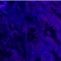
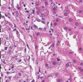
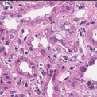

Surgery moves in minutes.
Pathology often moves in days.
Critical margin information arrives outside the surgical decision window.
Delayed pathology creates a system bottleneck.
SwiftDx compresses pathology support into supervised minutes.
A 5 Minute Workflow
From Tissue To Decision
SwiftDx eliminates physical sectioning and staining by using autofluorescence imaging, virtual staining and AI-assisted analysis.
From Tissue To AI-Assisted Margin Report
Demonstration of the complete SwiftDx imaging and interpretation pipeline

Sectioning Setup

Output

Overlay

Output
Report
3 named hospitals.
CMA: 54 member nations.
Commonwealth reach.
Superior in Time and Cost.
| Approach | Duration (min) |
Histology Visibility |
Startup Cost |
Individual Test Cost |
|---|---|---|---|---|
| Frozen Section | 20-30 | ** | **/**** | * |
| SwiftDx | <2 | ** | *** | ** |
| MarginScan | <3 | * | **/**** | *** |
| Claire | 10-15 | * | ***/**** | ** |
| Invenio | <3 | *** | ***/**** | ** |
| Histolog Scanner | <2 | *** | ***/**** | *** |
Clinical proof.
Economic proof.
Then scale.
Start with Tier 1 oncology centres where re-excision pressure, pathology delays, and IHC cost are acute.
Move from technical MVP to clinically integrated product ready for validation.
40%
Data, IRB, annotation
25%
Prospective validation
20%
Regulatory & MLOps
15%
Pilots & partnerships
Built for clinical impact.

Amay Kashyap

Mukund MV

Dr. Yin

Dr. Duane

Isabel

Yun Yin
Partner first.
Build data.
Scale responsibly.
Decision support.
Not replacement.
Workflow
Lab scans tissue → SwiftDx generates virtual stain + boundary overlay → Pathologist reviews and signs out.
Integration
Report exports confidence, heatmap, evidence patches, HL7 FHIR-compatible JSON for EMR/LIS integration.
Regulatory
MDA/FDA SaMD documentation, audit logs, model versioning, locked validation, and clinical risk controls.
Two models.
One report.
Virtual Staining
Pix2Pix/U-Net image translation (31.4M params). 180ms per 512px patch. SSIM 0.90-0.92.
Margin Classifier
MONAI ResUnit + vision-language head (86M params). Tumour-healthy boundary reasoning, >90% precision.
Clinical Output
Clear / close / involved label, confidence score, evidence patches, heatmap overlay, structured JSON.
Train in cloud.
Deploy anywhere.
Audit everything.
S3 Storage
De-identified WSI, metadata, annotations, locked dataset versions.
GPU Compute
Elastic training/validation with reproducible model artifacts.
Containers
Managed inference APIs for pilots. On-prem fallback for strict data governance.
MLOps
Latency monitoring, drift detection, audit logs, versioning, rollback, post-market monitoring.